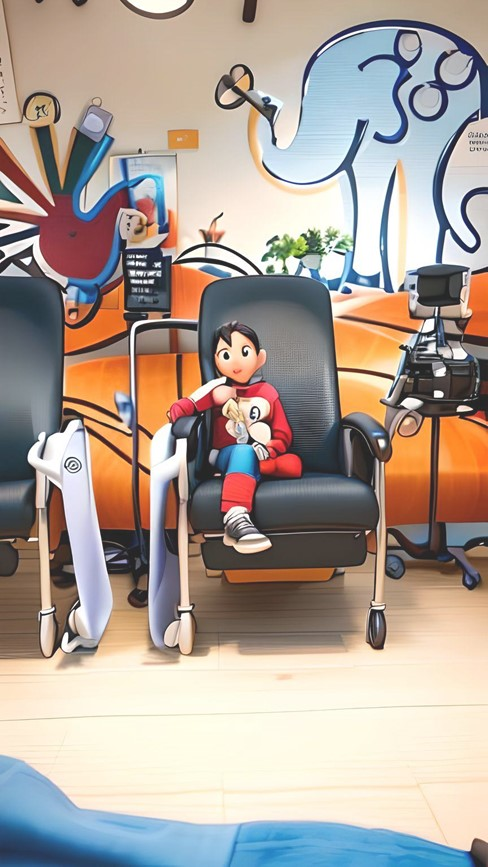

Español
Ingles


Your Children's Lives Are In Your Hands
Childhood cancer cannot be prevented, but it can be faced!
For early detection and care.
What is cancer?
Childhood cancer comprises many different types of tumors that develop in this population group. The most common types are leukemia, brain cancer, lymphoma, and solid tumors such as neuroblastoma and Wilms tumor.
Most common types of cancer in children and adolescents
- Leukemias:
- Acute lymphocytic leukemia (lymphoblastic) (ALL)
- Acute Myeloid Leukemia (AML)
- Chronic myelogenous leukemia (CML)
- Retinoblastoma
- Brain tumors
- Soft tissue sarcoma
- lymphoma
- Neuroblastomas
| Chemotherapy | surgery | Bone marrow transplant | Radiotherapy | Healthy System | Sick System |
|---|---|---|---|---|---|
| They are medications that eliminate cancer cells from the body and can be received intravenously, orally or intrathecally. | For solid tumors, surgery is an essential part of treatment. | It is a relatively recent form of treatment in pediatric pathology. The goal is to replace diseased bone marrow cells with healthy ones. | It is based on the therapeutic effect of the use of ionizing radiation, and as in the case of surgery, it is a local treatment. | Tumor suppressor genes in normal cells prevent cancer from forming | Sometimes changes in DNA inactivate tumor suppressor genes, causing cells to multiply uncontrollably. |
Real videos of moments in the middle of the treatment
Fundación Pollitos de Hierro
Contact
If you need more information call the following contact
Contact us here
Asociación Sembrando Esperanzas